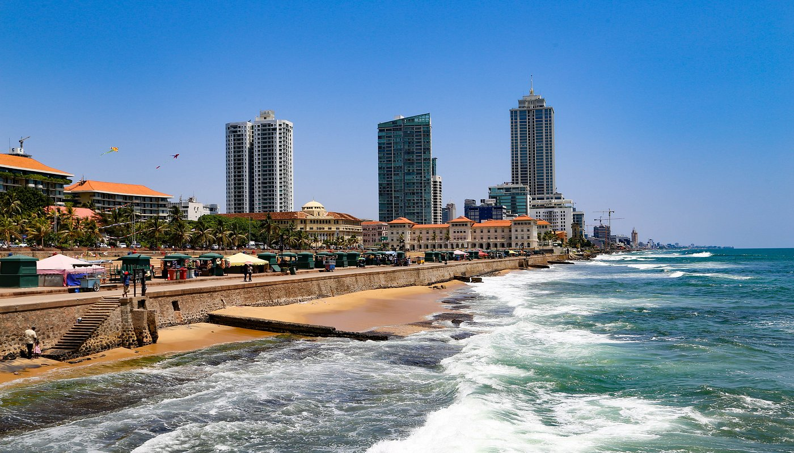

The heartbeat of Colombo's social life, where the Indian Ocean meets the city skyline in a vibrant sunset display.
Originally laid out by the British in 1859 for horse racing and polo, Galle Face Green is today the city's largest open space. It stretching for half a kilometer along the coast, offering a tranquil escape from the urban hustle.
As the sun sets, the promenade transforms into a bustling street food hub. Locals and tourists alike gather to fly kites, enjoy "Isso Vadai" (prawn crackers), and witness the golden rays reflecting off the Indian Ocean waves.
Back to Colombo Hub